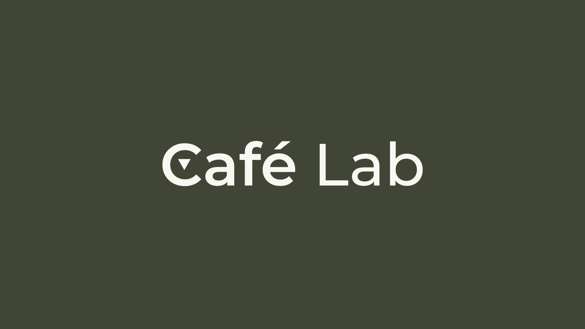

<mat-toolbar color="primary">
  <a mat-button routerLink="/" class="logo-container">
    
  </a>
  <span class="spacer"></span>
  <div class="nav-links">
    <a mat-button routerLink="/beneficios">Beneficios</a>
    <a mat-button routerLink="/planes">Planes</a>
    <a mat-button routerLink="/contactanos">Contáctanos</a>
    <a mat-raised-button color="accent" routerLink="/login">Iniciar Sesión</a>
    <button mat-button [matMenuTriggerFor]="languageMenu">
      {{ currentLanguage }}
      <mat-icon>arrow_drop_down</mat-icon>
    </button>
    <mat-menu #languageMenu="matMenu">
      <button mat-menu-item (click)="toggleLanguage()">
        {{ currentLanguage === 'ES' ? 'EN' : 'ES' }}
      </button>
    </mat-menu>
  </div>
</mat-toolbar> 